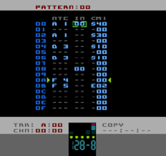

Introduction
Pulsar is a music tracker that runs on a NES/Famicom (or in your favourite NES emulator), designed and created by Neil Baldwin.
Perhaps the most radical feature of Pulsar is that the synthesis engine runs independently from the sequencer and runs at 180hz - that's 3 times faster than a "normal" NES audio engine. The advantage of this is that all modulation-based effects have 3 times the resolution so you can get ultra-fast and super-smooth sounds. At the same time it has allowed me to exploit a few quirks of the NES's audio to provide some unique ways to craft your NES music and sounds.
It was this approach which, to a large extent, dictated the design of the sequencing/UI of Pulsar and why it shares so much in common with LSDJ: LSDJ really makes great use of a simple, fast interface and because I'm updating the audio engine 3 times per frame, speed and simplicity were paramount.
Pulsar borrows heavily from the design, layout and commands of LSDJ. If you've used LSDJ you'll probably be pretty familiar with Pulsar's UI. There are a few little differences though so watch out for those.
I openly tip my hat to Johan Kotlinksi for his work on LSDJ. It's safe to say that Pulsar probably wouldn't exist without it. Or at the very least it would've taken me a lot longer to create.
Conventions
All numbers are expressed in hexadecimal (base 16) both in the manual and in Pulsar itself.
Where a number can be positive or negative, the values are in two's compliment.
Manual
Use the navigation on the left to get around the manual. There's plenty of hyperlinks that should enable you to find the information you need quickly.
I recommend a modern browser. It's been tested on the latest version of Safari, Chrome and Firefox.
If you'd like a different colour scheme for the manual I've provided 3 different ones. To change them, use a text editor to edit the file 'css/Pulsar.css' and change the second line to include the colour scheme you'd like, either 'PulsarColours_white.css', 'PulsarColours_green.css' or 'PulsarColours_blue.css'. You could also create your own colour scheme by editing those .css files or creating a new one. All the colours used in the manual are contained in those .css files.
Contact
Problems, errors or suggestions? Let me know: